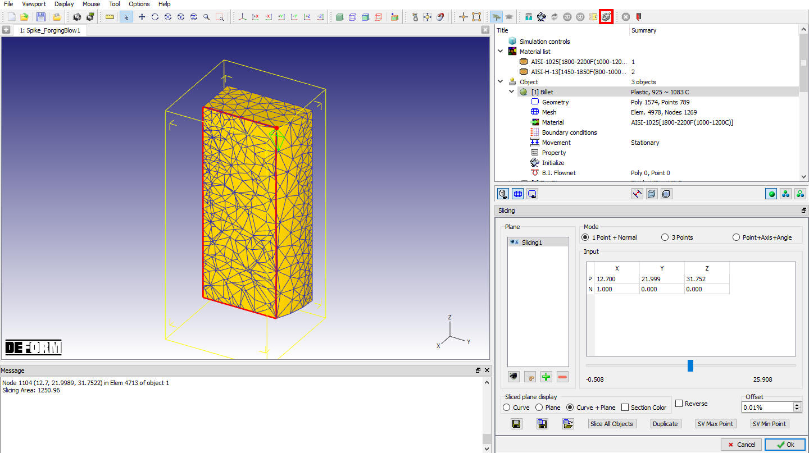
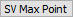
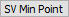
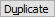
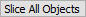

This utility enables the users to slice an 3D object and save the 2D cross section, either as geometry or as a keyword file including the state variable data from the slicing plane, (See Fig. 18.2.1.)

Slicing Window
Mode:
Point + Normal: Input a point and normal to determine a slicing plane. The normal direction indicates the side of the plane that will be cut away.
3 points: Input three points to determine the slicing plane.
Point+Axis+Angle : Input point, Axis and Angle to determine the slicing plane.
Add  : using this option user can add a slicing plane.
: using this option user can add a slicing plane.
Delete  : using this option user can delete defined slicing plane
: using this option user can delete defined slicing plane
Cutter : using this option user can slice the object.
Preview : using this user can show/hide the slicing plane.
SV max plot

: to slice through the point which has the maximum value of the state variable.SV min plot

: to slice through the point which has the minimum value of the state variable.Duplicate

: Make a set of slicing planes parallel to the selected plane.Reverse: Check to reverse the normal of the selected slicing plane
Save  : using this option user can Save 2D slice geometry and/or state variable. 2D Geometry can be saved in .IGS, DXF or in .KEY format.
: using this option user can Save 2D slice geometry and/or state variable. 2D Geometry can be saved in .IGS, DXF or in .KEY format.
Save Slicing planes  : Using this option user can save the Slicing plane data to a file in .dss file format.
: Using this option user can save the Slicing plane data to a file in .dss file format.
Load Slicing Planes  : Using this option user can import the saved Slicing plane file.
: Using this option user can import the saved Slicing plane file.
Slicing plane display options:
Curve: In display it shows only the curve of the object while slicing an object.
Plane: In display it shows only the plane of the object while slicing an object.
Curve +Plane: In display it shows both curve and of the object while slicing an object.
Slice All Objects

: slice all the shown objects using the selected plane.
Related Topics: